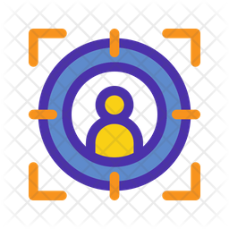

Target Audience
The site is aimed mainly to the farmers that live locally and want to find ways to promote their produce and even increase it. Tourists are a secondary group that are targeted.
Call us: +66932435717
alex.bedino@gmail.com
The site is aimed mainly to the farmers that live locally and want to find ways to promote their produce and even increase it. Tourists are a secondary group that are targeted.